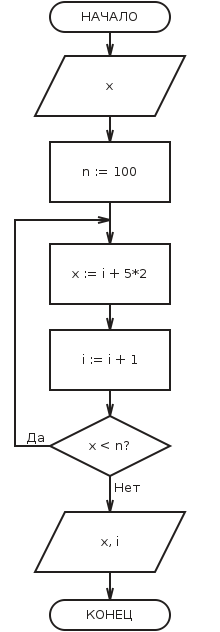

Цикл - управляющая структура, организующая многократное выполнение указанного действия.
Цикл "ДО":

Исполнение цикла начинается с выполнения действия. Таким образом, тело цикла будет реализовано хотя бы один раз. После этого происходит проверка условия. Поэтому цикл "ДО" называют циклом с постусловием. Если условие не выполняется, то происходит возврат к выполнению действий. Если условие истинно, то осуществляется выход из цикла. Таким образом, условие цикла "ДО" - это условие выхода из цикла. Для предотвращения зацикливания необходимо предусмотреть действия, приводящие к истинности условия.
Зацикливание - бесконечное повторение выполняемых действий.
Пример использования цикла с постусловием (иллюстрация из программы):
